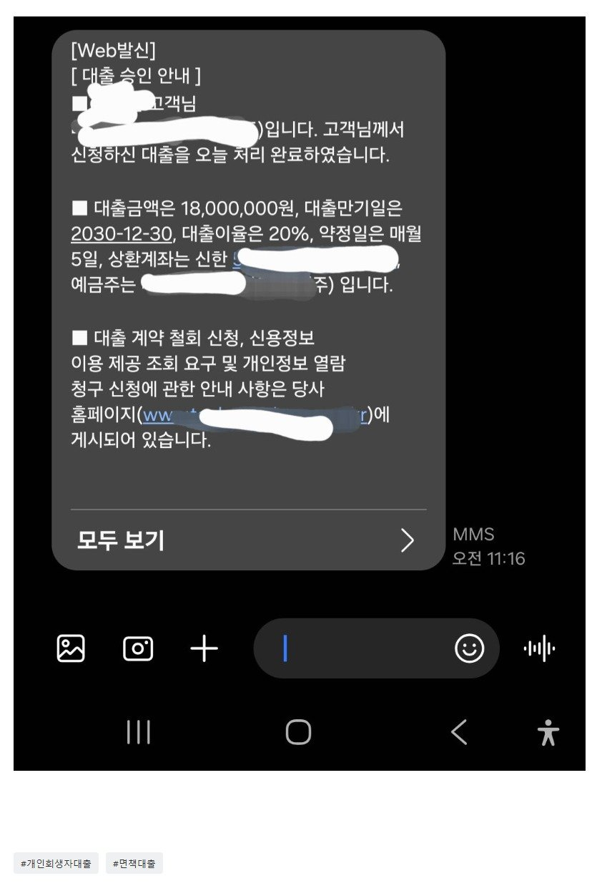

[개인회생자대출] 회생면책된지2주, kcb100점인 상황에서 1800만원으로 채무통합 및 생활자금마련에 성공. 김용혁 대표님 이현섭 과장님 감사합니다!
재직형태: 정규직 직장인
4대보험: 가입
연소득: 약 5천만원
재직기간 11개월
신용점수 100/350(면책선고 받은지 2주밖에 안돼서 회복이 안된거같아요)
채무내역: 안전 1000 골든 480
개인회생 면책 선고 받은지 2주 됐구요
선고는 받았는데 채권사에서 대출 변제 완료? 를 한군데서밖에 안해줘서 신용등급이 바닥이네요 ㅎ휴ㅠㅠ 그래서 개인회생자 대출로 알아봤고 다행히 1800받아서 두곳 대환하고 나머지 300은 여유자금 생겨서 살것같아요!
대표님이 이것저것 챙겨주시고 주의할점도 알려주시고 대출 안될줄알고 첨엔 그냥 안되면 어쩔수없지 하는 생각으로 신청했는데 대출 한곳으로 묶을수있게 돼서 너무 좋았습니다 ㅠ!
얼마전에 저축은행에서 한도 나왔다가 어처구니없게도..회사 유선전화가 없어서 진행하다가 부결나서 진짜 속상했는데 너무 감사합니다

https://cafe.naver.com/cityman88/309802